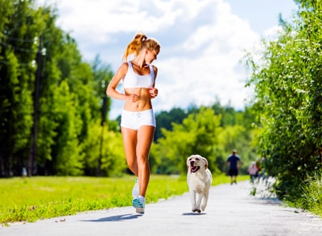
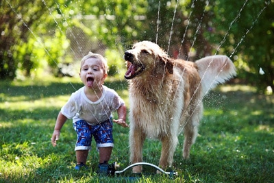

Antes de tener un perro: Comprar VS Adoptar
Si estas pensando en comprar un perro, te recomendamos que primero te plantees la idea de adoptarlo. Adoptar a un perro es mucho más económico que comprarlo, además le estarás dando una oportunidad a un perro sin hogar que necesita una familia.
Los perros adoptados son igual de buenos que los perros comprados, incluso son muchas las personas que afirman que debido a su condición, son incluso más agradecidos que los perros comprados.
No importa la raza, créenos cuando te insistimos en este punto: No importa absolutamente nada si es un perro de raza o un perro mestizo ¿o acaso tu eres de raza?
Antes de tener un perro: Mis necesidades – Sus necesidades

Otro factor muy importante es valorar para qué queremos un perro. Si por ejemplo queremos que nos haga compañía en casa, salir con el a jugar y pasear, etc…. Bastará con un perro de tamaño mediano o pequeño (también puede ser grande si disponemos de mucho espacio) y cuyo carácter sea tranquilo. Es muy importante valorar el carácter de un perro, ya sea cachorro o adulto.
Si además de hacernos compañía y jugar con el, queremos que nos acompañe a hacer ejercicio (ir en bici, patines, correr….), entonces debemos cerciorarnos de que nuestro perro sea enérgico. Determinados perros como los utilizados en pastoreo, tienen una energía muy superior al resto de perros. Pueden ser una gran opción si queremos ejercitarlos junto a nosotros.
Recuerda que si adquieres un perro enérgico, deberás realizar deporte con el a menudo. No sirve salir a correr una vez por semana y fin… para eso mejor busca un amigo. Los perros de pastoreo por ejemplo, requieren de ejercicio todos los días, sin excepción.
Existen infinidad de perros que requieren poco ejercicio diario, que simplemente les basta con un paseo y con jugar un poco. Decide bien que tipo de perro quieres tener ya que no todos son iguales.
Antes de tener un perro: ¿Cuanto tiempo le vas a dedicar?
Te sorprenderás al saber que los perros necesitan que les dediquemos muchísimo más tiempo del que puedas imaginar. No todo es sacarlos a hacer un pis y darles un paseo…. Debemos jugar con ellos, preparar sus comidas, sacarlos como mínimo tres veces al día todos los días, cuidarlos, bañarlos, educarlos…. Si piensas que con una media hora libre al día tienes suficiente tiempo para atenderlo, mejor cómprate o adopta una planta.
Algunos perros, principalmente los de raza pequeña, requieren menos tiempo en los paseos. Pueden ser una gran opción para personas que no disponen de mucho tiempo libre para pasear (aunque eso no significa que no tengas que bajarlo tres veces como mínimo al día a hacer sus necesidades y pasear un poco).
Si no dispones de tiempo libre, no tengas un perro. Ellos necesitan estar contigo, que los cuides, que los pasees y que simplemente les dediques algunas horas al día para que se sientan felices.
Antes de tener un perro: Aseo, niños y seguros….

El aseo es un aspecto fundamental para nuestro perro, como hemos mencionado anteriormente, debemos mantenerlo limpio y desparasitado. Para ello debemos bañarlo una vez al mes (o más dependiendo de las situaciones) y mantenerlos desparasitados.
También debemos cepillar su pelo y revisar su cuerpo en busca de posibles problemas (espinas clavadas en las almohadillas de las patitas por ejemplo). Todo esto sin olvidar limpiar sus orejas con cierta frecuencia, tal y como explicamos aquí: Aprende a limpiar correctamente las orejas de tu perro.
Si tenemos niños pequeños en casa, debemos enseñarles a respetar al perro. Un perro NO es un juguete, recuerdalo siempre y haz que tus hijos lo comprendan